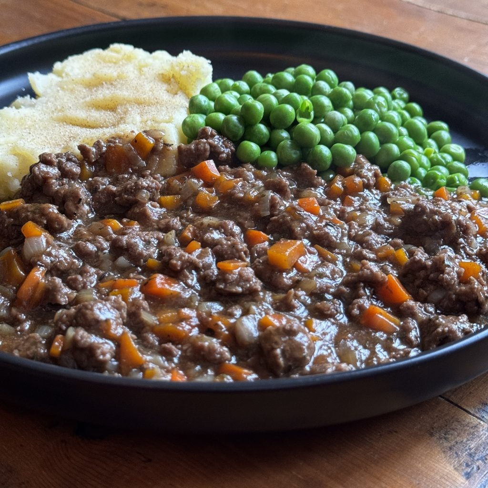

Mince & Tatties

Description
If you’ve grown up in Scotland, there is a 99.99% chance your family will have a Mince & Tatties recipe.
But there are a few different variations in how it’s made, dependant on who makes it.
Ingredients
- Olive/Vegetable Oil
- Carrot
- Onion
- Mixed Herbs
- 20% Beef Mince
- Beef OXO
- worcestershire Sauce
- Gravy Granules
- Salt and Pepper
Steps
- Finely chop carrots and onions
- add to pan with oil and mixed herbs
- Cook until softened
- add beef mince to pot and season with salt and pepper
- Cook mince until browned
- add worcestershire sauce and beef stock cube dissolved in water
- Simmer for approx 30 minutes
- Boil Potatoes
- serve
Home